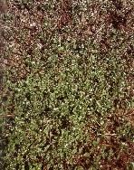
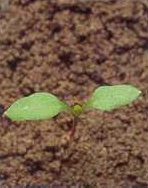

TYÚKHÚR
STELLARIA MEDIA (L.) Cyr. (STEME)
ÉLETFORMA: T1
TERMÉS: Toktermése 5 mm hosszú, éréskor 6 kopácsa a
közepéig felhasadó. A mag kerek, gyakran tompán három vagy négyszögű. Felülete
bibircses. A bibircsek laposak, szabálytalan alakúak, az oldalukon legfeljebb a perem
közelében alkotnak 1-2 koncentrikus sort. Színe vörösesbarna vagy szürkésbarna.
Átmérője 0,8-1,4 mm. Ezermagtömege 0,35-0,55 g. Egy tokban átlag 10 mag található,
magprodukciója növényenként 500-2500 között változik, egyes példányok 15 000
magot is hozhatnak. A magvak életképessége 90-100 %. Csírázási optimuma 12-20 °C
között van, de a 2 °C-os hőmérsékleten már csírázik. A 30 °C feletti
hőmérséklet gátolja a csírázást.
CSÍRANÖVÉNY: A sziklevelek tojásdadok, csúcsuk hegyes.
Nyelük olyan hosszú, mint a levéllemez. Az első lomblevelek kerekded-tojásdadok,
hegyesek, nyelesek.
KIFEJLETT NÖVÉNY: Egyéves, szára 10-50 cm hosszú,
többnyire elfekvő, igen ágas, az egyik oldalán szőrsáv húzódik végig. Levelei
tojásdadok, röviden kihegyezettek, az alsók nyelesek, a felsők ülők. Virágai
hosszú, vékony kocsányokon fejlődnek a levelek hónaljában. A kocsány virágzás
után lehajlik, később ismét feláll. A virág színe fehér. A nitrogénben gazdag,
5,2-8,2 pH-jú talajokat kedveli. A csapadékos időjárás elősegíti felszaporodását.
Csírázási mélysége 3 cm-ig terjed. Száraz időszakban a talaj felső rétegében
haladó gyökere kiszárad, ezért elpusztul vagy ki sem csírázik.
ELRERJEDÉSE: Kozmopolita.
 |